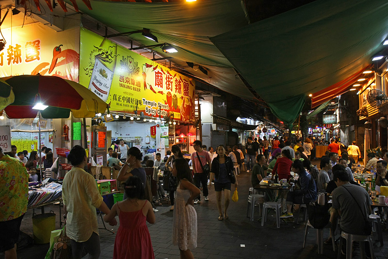

ULTIMATE HONG KONG FOOD GUIDE
Hong Kong has some of the best restaurants in the world, varying from cheap street food to top-notch Michelin-starred restaurants. However, it is undoubtedly their local dishes that make Hong Kong's culinary scene unique. Although most of these foods are influenced by Chinese cuisine many also catch the east-to-west tradition of Hong Kong in the most delicious way. There is something here to appeal to all tastes, be it the traditional Cantonese dim sum or beverages influenced by British culture.
Here are some of the best places to try some of these local Hong Kong dishes. Such restaurants and cafes are the perfect place to taste the real flavours of the Hong Kong food culture from wonton noodles in Mak's Noodles to egg cake in Tai Chéong Bakery, from fish in Sai Kung, to barbecued meats in Joy Hing.
The best food in Hong Kong and where to find it
-

Dim Sum
Sham Shui Po
Without a dim sum dinner, no Hong Kong experience is complete. These small bites are traditionally served in bamboo steamers and are intended to be shared, so that you can sample a wide variety without filling up too quickly. The must-order must include siu mai (pork dumplings), har gow (prawn dumplings) and the fluffy barbecued pork-filled buns known as char siu bao.
-

Barbecued meats
Wan Chai
Nothing beats good ol' Canto-style barbecued meats, namely ' siu mei ' from melt-in-your-mouth honey-glazed pork and crispy suckling pigs to fatty pork bellies, and succulent goose or duck.
-

Curry fishballs
Wan Chai
Perhaps the most iconic treat on the road in Hong Kong is the curry fishballs. Although most of them are made from flour these days and have almost no fish meat, this dish still remains a crowd favourite. The bite-sized spheres are springy to the bite, marinate in a strong curry sauce before being skewered on a bamboo stick or with extra curry in a cup for on-the-go enjoyment.
-

Egg tarts
Central
The egg tarts (in Cantonese "dan taat") are a sweet favourite in Hong Kong. Creamy custard nestles into a golden crust made of flaky, crumbly pastry or of a butter cookie in design. There is furious discussion about which crust style is better but these treats are best enjoyed directly out of the oven, fresh and warm.
-

Pineapple bun
Prince Edward
In spite of its name, a pineapple bun has no actual pineapple (although for the sake of innovation a few chefs incorporate pineapple into the bun). It is named rather for its visual similarity to the tropical spikey fruit. On the top, the sweet crust is made from sugar, eggs, flour, and lard baked until golden-brown and crumbly.